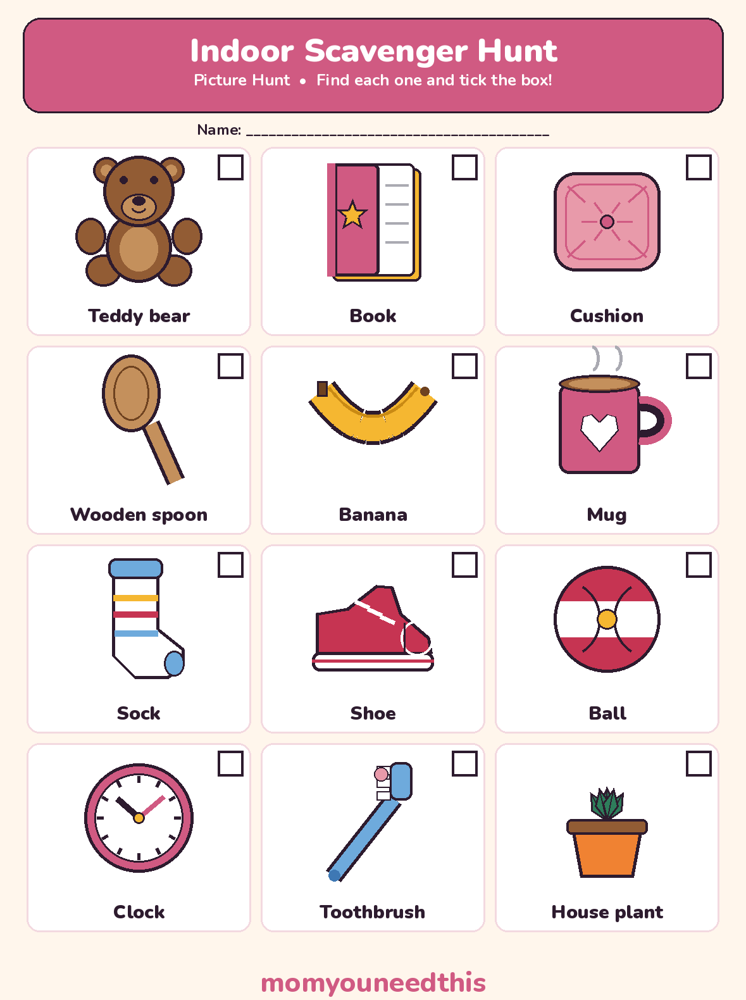
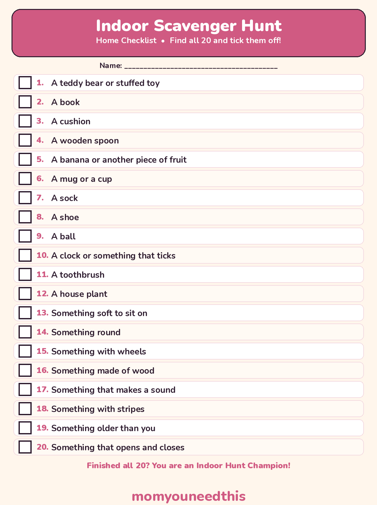

Indoor Scavenger Hunt Free Printable Picture Hunt, Checklist & Clues for Rainy Days
A rainy-day indoor scavenger hunt with two free printables: a 12-picture hunt for little kids who cannot read yet, and a 20-item checklist for older kids — plus written clues, house-safe rules, a quiet-apartment version and a solo beat-the-clock game. Works in any home, large or small. No signup.
Last updated: October 25, 2026
Quick Answer
This indoor scavenger hunt turns a rainy day at home into a game with almost no prep. Print the 12-picture sheet for little kids or the 20-item checklist for older kids, hand over a pencil, and hunt room by room. Written clues, a quiet version and a solo timer game are on the page too.
At a Glance
- Hunts: 2 printables + a 10-clue version
- Picture hunt: 12 items, pictures + words
- Checklist: 20 items, with challenge items
- Ages: 2+ with an adult (picture), 5+ (checklist), 7+ (clues)
- You need: A printer, a pencil, your home
- Cost: Free — print at home
🏠 Hunt Room by Room: Where Everything Hides
The secret to a hunt that works in a real home: every item on the list is already there, in a room your child is allowed to be in.
Split the house into hunting zones and the game organises itself. Living room finds are the soft, visible ones. Kitchen finds come only from counters and cupboards an adult has cleared first — nothing sharp, nothing breakable, nothing from high shelves. Bedroom finds are the cosy ones your child walks past every day without ever really seeing them.
🛋️ Living room.
A cushion • A book • Something soft • A house plant • Something round • A clock or something that ticks
🍳 Kitchen — adult-cleared only.
A wooden spoon • A banana or another piece of fruit • A mug • A tea towel • Something with stripes • Something made of wood
🛏️ Bedroom.
A teddy bear • A sock • A shoe • A story book • Something with wheels (a toy car counts) • Something that opens and closes
Found means seen: a hunter points at the real thing and ticks the box. Nothing has to be carried back, gathered up or emptied out — which is why this game ends with a tidy house instead of a pile.
🧒 The Picture Hunt for Little Kids
A hunt a 2-year-old can actually play: every item is a picture first, so nobody has to read a word to join in.
The picture sheet holds 12 things that are really in your home — a teddy bear, a book, a cushion, a wooden spoon, a banana, a mug, a sock, a shoe, a ball, a clock, a toothbrush and a house plant. Your child carries the sheet from room to room, finds each one, points at the real thing, and ticks its box.
Little kids hunt with an adult. Walk with your toddler, read the word under each picture out loud, and let them do the finding and the ticking — that part is theirs. If an item lives up high, a point and a shout count as found.

✂️ Download Your Free Picture Scavenger Hunt
12 household pictures to find and tick — made for kids who cannot read yet.
⬇️ Download Free Picture Hunt 🖨️ Print🎁 Free printable for ages 2–5, with an adult
🔎 The 20-Item Home Checklist
The same house, a much harder hunt — written items for readers, ending in challenges with no single right answer.
The checklist starts with the same 12 finds as the picture sheet, then turns into a challenge: something soft to sit on, something with wheels, something that makes a sound, something older than you, something that opens and closes. Those last eight items are why a 9-year-old will still be hunting long after the easy ticks are done — and arguing, happily, about what counts.
Make it competitive: print a sheet each, set a timer for 20 minutes, and score 1 point per item plus 2 points for every challenge item (numbers 13 to 20). Most points wins, so the careful hunter beats the fast one.

✂️ Download Your Free Home Checklist
20 items to find and tick, including 8 challenge items — one sheet per hunter.
⬇️ Download Free Checklist 🖨️ Print🎁 Free printable for ages 5+
🧩 Indoor Scavenger Hunt Clues for Older Kids
These indoor scavenger hunt clues turn the same rooms into a riddle hunt: an adult reads a clue out loud, and the hunter has to work out what to find before anyone can tick it off.
Answers are printed under each clue for the grown-up reading them out — cover them with a thumb if your hunters are reading along. Every answer is an ordinary household thing that is really there to be found.
Clue 1.
I have a face and two hands, but I never wave. I tell you when lunch is coming.
Answer: a clock.
Clue 2.
I have a spine and pages full of pictures, and I get better every time you open me.
Answer: a book.
Clue 3.
I live in the kitchen, I help soup reach your mouth, and I am not a fork.
Answer: a wooden spoon.
Clue 4.
I am soft, I live on the sofa, and heads and elbows both love resting on me.
Answer: a cushion.
Clue 5.
I hold hot chocolate, I have exactly one handle, and I wait in a cupboard.
Answer: a mug.
Clue 6.
I travel everywhere you go, I always come in pairs, and I sleep by the door.
Answer: a shoe.
Clue 7.
I work twice a day with minty bubbles, and I stand in a cup in the bathroom.
Answer: a toothbrush.
Clue 8.
I am soft, I never get hungry, and I have been hugged more than anyone in the house.
Answer: a teddy bear.
Clue 9.
I wear a yellow jacket that you peel off before you eat me.
Answer: a banana.
Clue 10.
I drink water, I love sitting by the window, and I grow leaves instead of hair.
Answer: a house plant.
🛡️ House Rules: Hunt Hard, Break Nothing
Say the rules once, before the first sheet comes off the printer — they are what make this a game you will happily run again.
🚶 Walk, don't run.
Hunting feet walk. Running indoors is how lamps, toes and tempers get broken — and a walker spots more than a runner anyway.
🙌 No climbing.
Nothing on the list needs climbing to be found. If something is up high, point at it and shout — that counts, every time.
🗄️ Drawers stay shut.
Nothing comes out of a drawer or cupboard an adult has not cleared first. Before the hunt, clear one kitchen drawer and one cupboard and name them as hunting ground.
✋ Found means seen.
Point, tick, move on. Hunters never carry, move, empty or hide household things — the house looks exactly the same when the game ends.
Adult walk-through first: before you hand out sheets, take two minutes to walk the route yourself. Check the kitchen zone holds nothing sharp, hot or breakable, move anything precious out of the hunting rooms, and decide which doors stay closed. That short check is the whole safety system.
🤫 Two More Ways to Play: Quiet Apartment & Beat the Clock
Same sheets, two completely different games — one for thin walls, one for a child hunting alone.
🤫 The quiet-apartment hunt.
Play the whole hunt in socks and whispers. A find earns a silent thumbs-up instead of a shout, doors are opened and closed slowly, and there is a bonus point for finishing without a single loud noise. If the neighbours could hear it through the wall, it does not count.
⏱️ Beat the clock — solo.
One hunter, one checklist, ten minutes on the timer. Tick as many items as you can, write the score at the top of the sheet, and try to beat it next rainy day. Hunting the rooms in order — living room, kitchen, bedroom — is the fastest route most kids find.
🖨️ How to Run Your Hunt
- Print the right sheet. Picture hunt for little kids who cannot read yet, checklist for readers, clues for ages 7 and up. One sheet per hunter, plus a pencil each.
- Clear the kitchen first. Walk the rooms yourself, clear one drawer and one cupboard as hunting ground, and move anything breakable or precious out of the game.
- Say the rules out loud. Walk, don't run. No climbing. Drawers an adult has not cleared stay shut. Found means seen and pointed at — nothing gets moved.
- Pair up the youngest hunters. Toddlers hunt with an adult or an older sibling: they carry the picture sheet, name each picture together, and the ticking is the toddler's job.
- Finish together. Count the ticks out loud, crown the Indoor Hunt Champion, and let the winner choose the snack. A hunt that ends with a snack gets asked for again.
🔍 More Hunts & Rainy-Day Fun
🌿 Nature Scavenger Hunt
Take the hunting outside with a picture sheet and four seasonal lists for the park or garden. Try the nature hunt.
🎄 Christmas Scavenger Hunt
A festive picture hunt and checklist for the decorated house, plus a Christmas lights walk. See the Christmas hunt.
🤔 Riddles for Kids
More thinking games for the hunters who loved the clue round. Read the riddles.
🎨 Free Coloring Pages
Hundreds of free coloring sheets to print for every age. See the coloring pages.
❓ Indoor Scavenger Hunt FAQ
What age is this indoor scavenger hunt for?
The picture hunt suits ages 2 to 5 — the items are pictures with word labels, so a child who cannot read yet can still play, hunting alongside an adult. The written checklist suits ages 5 and up, and the clue version keeps 7- to 10-year-olds thinking, because they have to solve the riddle before they can hunt.
Is the indoor scavenger hunt free to print?
Yes — both sheets are free to print at home, as many copies as your hunters need, with no signup. Print one per child so everyone ticks their own boxes.
How do you play an indoor scavenger hunt with toddlers?
Use the picture sheet and hunt together: walk room to room with your toddler, read the word under each picture, and let them spot the real thing and tick its box. Keep it short — one full sheet of 12 finds is a complete game at this age, and a point and a shout count for anything up high.
Can we play in a small apartment?
Yes — the hunt works in any home, large or small. In a small apartment, use the quiet version on this page: socks and whispers, silent thumbs-ups for finds, and a bonus point for finishing without a loud noise. Small homes are often faster and funnier to hunt, because everything is close together.
What if we don't have everything on the list?
Use the swap rule: a hunter may swap any missing item for something in the same family — a different fruit for the banana, a different soft toy for the teddy — as long as an adult agrees the swap before the tick. Almost every home has all 20, but the swap rule means no hunt ever gets stuck.